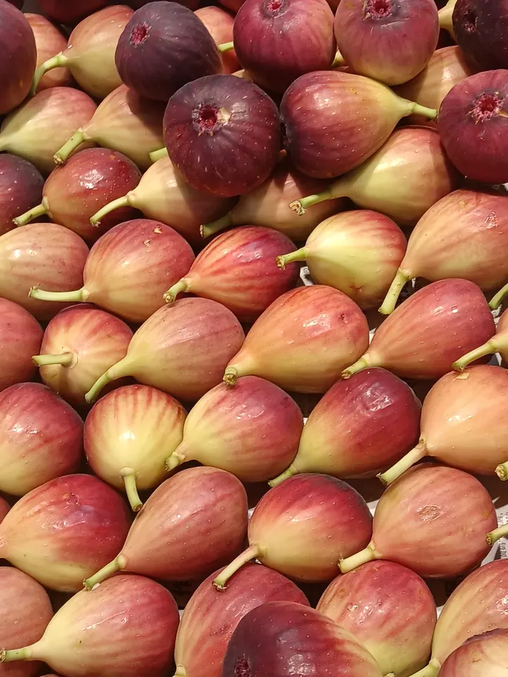
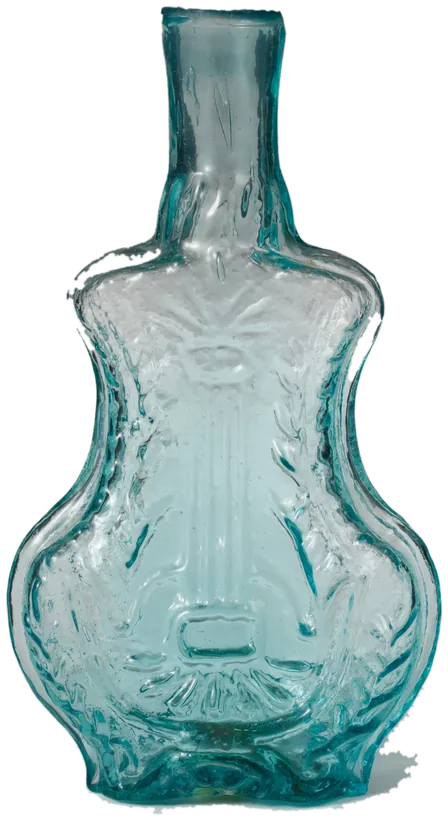
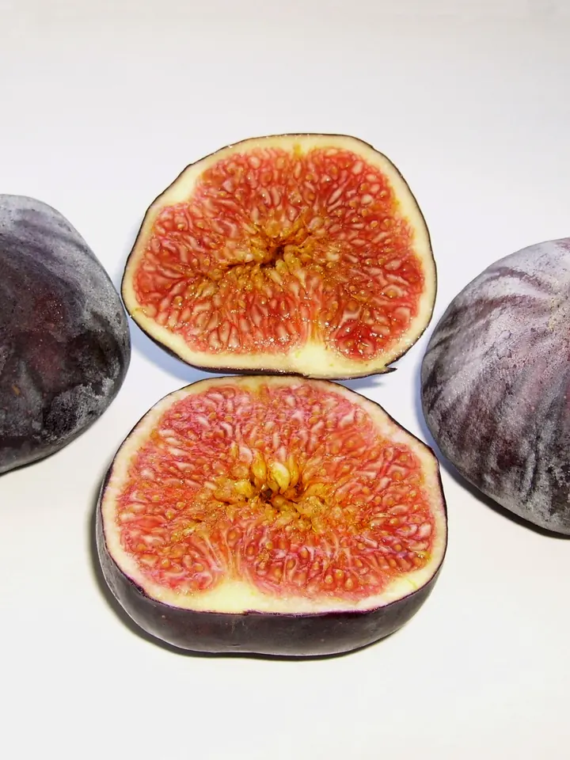
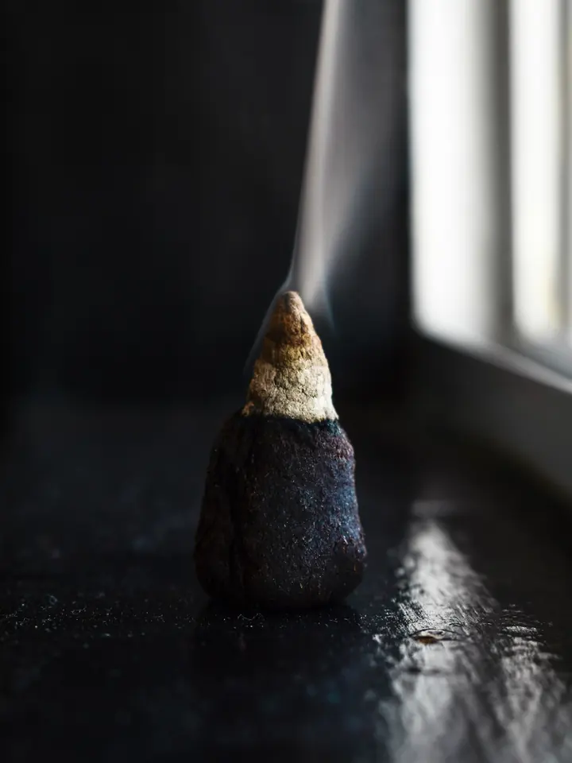
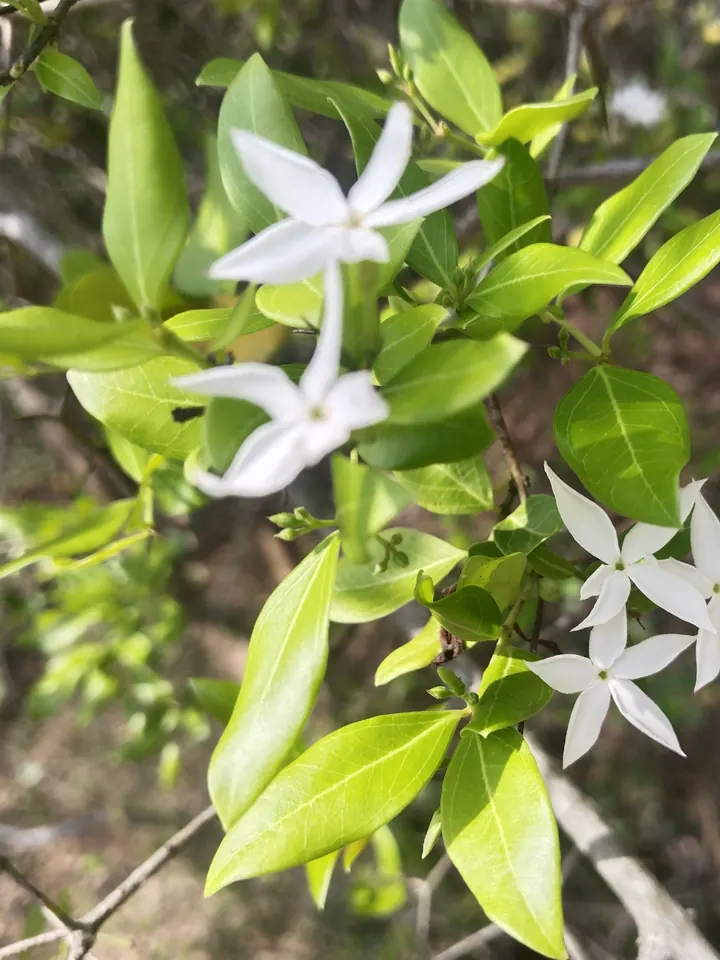
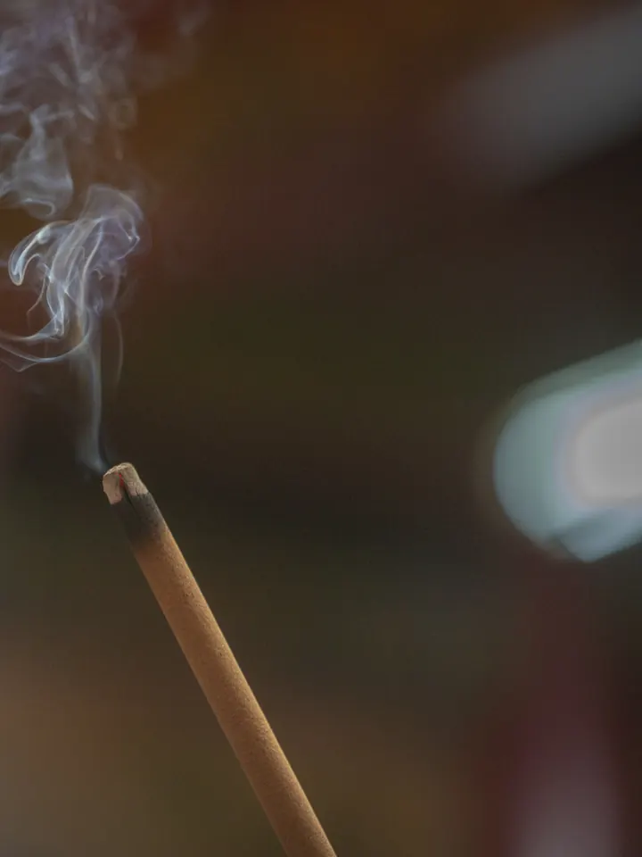

Top
The first ten minutes. Bergamot, pink pepper, neroli.


Three eaux de parfum built on one idea: a fragrance is not an object, it is a movement.
Discover the threeManifesto
The collection

No. 01 / 03
A split fig left on warm wood at the end of August.

No. 02 / 03
One cone of incense, a window open, the room going quiet.

No. 03 / 03
The flower that waits for dark before it says anything.
How a trail is built
The first ten minutes. Bergamot, pink pepper, neroli.

The hours in between. Fig milk, frankincense, night jasmine.
What is still there at midnight. Cedar, labdanum, benzoin.

The trail a perfume leaves behind you. We design for it first.
The flacon
Specs of a fictional product, drawn for this concept.
Leave a trail